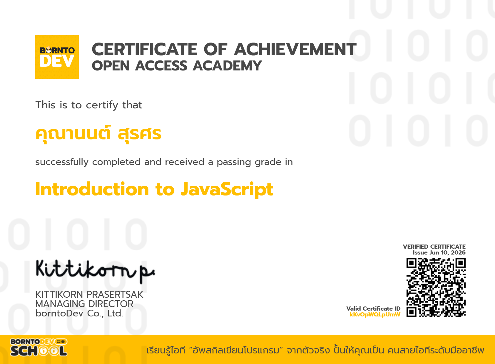

วัตถุประสงค์ของเว็บไซต์
เว็บไซต์นี้พัฒนาขึ้นเพื่อเป็นแหล่งสะสมผลงานของนายคุณานนต์ สุรศรในด้านการพัฒนาโปรแกรมและเว็บไซต์โดยใช้ภาษา Python, HTML, CSS และ JavaScript เพื่อพัฒนาความสามารถในด้านการเขียนโปรแกรมให้มีมากขึ้น และ สร้างโอกาสย้ายสายมาหางานทำตามความสนใจและทักษะที่มีในสายเขียนโปรแกรมหรือข้อมูลเช่น Python Programmer และ Data Engineer เนื้อหาของเว็บไซต์มีหลายหัวข้อประกอบด้วย
ประวัติส่วนตัว

ผมชื่อ นายคุณานนต์ สุรศร สำเร็จการศึกษาจากสาขาวิศวกรรมอุตสาหการ คณะวิศวกรรมศาสตร์ มหาวิทยาลัยเกษตรศาสตร์ในวันที่ 1 เมษายน 2024 มีความสนใจในเรื่องการเขียนโปรแกรมในช่วงปีสุดท้ายของการเรียน จากคำถามที่มีต่อตัวเองว่า เราจะไปทำงานอะไรหลังจากสำเร็จการศึกษา สิ่งแรกที่เรารู้ตัวคือเราไม่ได้มีเป้าหมายจะทำงานตรงสายเพราะเราไม่ได้เรียนได้เกรดดีมาก และ เรียนเป็นเวลามากกว่า 4 ปีที่คณะวิศวกรรมศาสตร์
สิ่งที่ผมสนใจและพบว่าเราใช้เวลาอยู่กับมันได้นานคือการเขียนโปรแกรม เพราะ ถึงแม้ว่าเราเรียนที่คณะวิศวกรรมศาสตร์ แต่วิชาที่เราต้องเรียนคือ วิชาการเขียนโปรแกรมโดยใช้ Python ที่จะถูกนำไปใช้ในวิชาของภาคเรียนถัดไป หลังจากสำเร็จการศึกษาในเดือนตุลาคม 2024 ผมไปลงคอร์สเรียนออนไลน์เกี่ยวกับการเขียนโปรแกรมโดยใช้ภาษา SQL ขณะเดียวกันก็ค้นหาตัวเองและทำงาน มันทำให้เราได้ค้นพบจุดเด่นและข้อจำกัดของตัวเองที่ต้องปรับปรุง ส่วนเรื่องการเขียนโปรแกรมหลังจากเรียนจบคอร์สการเขียนโปรแกรมโดยใช้ภาษา SQL เราได้เรียนการเขียนโปรแกรมโดยใช้ภาษา Python เพื่อทบทวนจุดที่เราลืมไปและต่อยอดจากสิ่งที่เรียนมาต่อมาลงเรียนการพัฒนาเว็บไซต์โดยใช้ HTML, CSS และ JavaScript
ตั้งแต่เดือนตุลาคมปี 2024 จนถึงเดือนพฤศจิกายน 2026 เรามีประสบการณ์ในการเขียนโปรแกรมโดยใช้ภาษา SQL Python, HTML, CSS และ JavaScript ผ่านการเรียนคอร์สเรียนออนไลน์ ทำโปรเจกต์ของคอร์สเรียนออนไลน์ พัฒนาโปรเจกต์ส่วนตัวขึ้นมา โดยเฉพาะในภาษา Python ผมมีประสบการณ์ใช้ Library เช่น Pandas, Matplotlib, Scikit-learn, Tkinter และ Streamlit สิ่งเหล่านี้ทำให้ผมมีเป้าหมายอยากจะย้ายสายมาทำงานในด้านการเขียนโปรแกรม ถึงแม้ผมรู้ว่าผมไม่ได้จบตรงสายแต่มันเป็นสิ่งที่ทำให้ผมได้สนุกและใช้เวลากับการพัฒนาโปรแกรมหรือเว็บไซต์ เป้าหมายของผมคือการทำงานในสายเขียนโปรแกรมหรือสายข้อมูล อาชีพที่ผมอยากทำงานคือ Python Programmer และ Data Engineer
ทักษะด้านการเขียนโปรแกรม
- Python
- Pandas
- Matplotlib
- Scikit-learn
- Tkinter
- Streamlit
- SQL
- HTML
- CSS
- JavaScript
ผลงานที่ผ่านมา
Project: Python Easy Quiz Website Course : Introduction to JavaScript Completed Day : 10 June 2026
โปรเจกต์การพัฒนาเว็บไซต์การทดสอบความรู้ภาษา Python แบบง่ายโดยใช้ความรู้ใน HTML5 CSS3 และ JavaScript สำหรับการออกแบบเว็บไซต์จากคอร์สเรียน Introduction to JavaScript ของ BorntoDev ที่ผมได้ศึกษาและเรียนรู้เกี่ยวกับการพัฒนาเว็บไซต์ก่อนสร้างโปรเจกต์นี้ขึ้นสำหรับการขอประกาศนียบัตร
Website : https://kunanonsurasorn.github.io/Python_easy_quiz_website/
ประกาศนียบัตรที่ได้รับ

ช่องทางการติดต่อ
GitHub : https://github.com/kunanonsurasorn